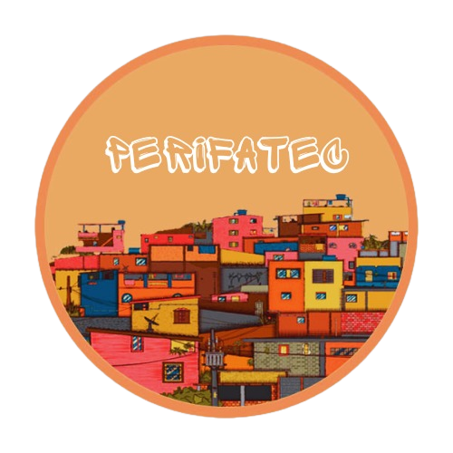

PERIFATEC
 PERIFATEC é um evento com o tema empreendedorismo periférico no qual tem o intuito de repassar informações para a sociedade sobre o tema, como administrar seu negócio e mostrar as dificuldades de ser um empreendedor, principalmente na periferia
No Brasil, as ações de empreendedorismo periférico começaram a se destacar nos anos 1990, em uma época de redução dos investimentos do Estado brasileiro nas periferias. Para suprir necessidades e carências das comunidades, as pessoas residentes desses lugares passaram a se organizar e criar pequenos negócios.
PERIFATEC surgiu por meio de uma seleção de temas (feita pelo segundo modulo de administração da ETEC de Rio Grande da Serra), observando-se que é um tema bastante praticado pela comunidade resolveu-se comentar maneiras nos quais ajudariam a sociedade a compreender como funciona este tipo de empreendedorismo (a origem, os desafios e as dificuldades).
Quais são os empreendedores perifericos?
São todos os empreendedores que geram rendas e empregos na região, ou seja, negócios de impacto nascidos nas periferias e fundados pelos seus próprios moradores.
Exemplos de empreendedores da região
OS empreendedores mais comuns achados na região de Rio Grande da Serra, são vendedores de coxinhas, espetinhos, bazares, churros, bolos, artesanatos, lojas em geral, estúdios de tatuagens e etc.